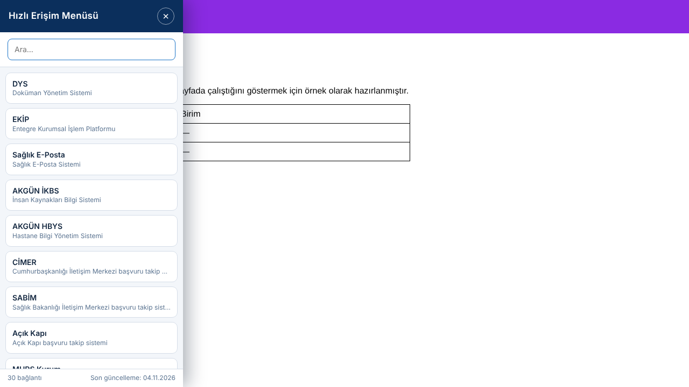

Solda liste
Tek tıkla ekranın solunda açılır; sayfadan ayrılmadan bağlantıya geçersiniz.
Hızlı arama
Listeyi başlığa veya açıklamaya göre anında süzer.
Kolay kapanır
Yer imine tekrar tıklayın, × düğmesine veya Esc tuşuna basın.
1
Tek seferlik kurulum
- Yer imleri çubuğunu açın: Ctrl + Shift + B
- Aşağıdaki düğmeyi fareyle yer imleri çubuğuna sürükleyip bırakın.
Düğmeyi tutup yer imleri çubuğuna bırakmanız yeterlidir.
Sürükleme olmuyor mu? Yer imini elle ekleyin
- Yer imleri çubuğuna sağ tıklayın → Sayfa ekle (veya Yer imi ekle).
- Ad: Hızlı Erişim Menüsü | URL: kopyaladığınız adresi yapıştırın → Kaydet.
2
Kullanım
- Herhangi bir web sayfasını açın.
- Yer imleri çubuğundaki Hızlı Erişim Menüsü yer imine tıklayın. Ekranın solunda bağlantı listesi açılır.
- İstediğiniz bağlantıya tıklayın; sistem yeni sekmede açılır. Listeyi kapatmak için yer imine tekrar tıklayın veya Esc tuşuna basın.
Önizleme

Güvenle kullanabilirsiniz
Sayfayı okumaz
Açık olan sayfanın içeriğine, şifrelerine veya oturum bilgilerine dokunmaz.
Açık olan sayfanın içeriğine, şifrelerine veya oturum bilgilerine dokunmaz.
Veri göndermez
Hiçbir adrese bağlantı kurmaz; yalnızca listedeki bağlantıları gösterir.
Hiçbir adrese bağlantı kurmaz; yalnızca listedeki bağlantıları gösterir.
Sayfa tasarımını bozmaz
Liste, açık sayfadan yalıtılmış ayrı bir katmanda çizilir.
Liste, açık sayfadan yalıtılmış ayrı bir katmanda çizilir.
Kodu açık
Tüm kaynak kod aşağıdan okunabilir.
Tüm kaynak kod aşağıdan okunabilir.
Kaynak kodunu görüntüle
Yedek yöntem
Yer imi çalışmıyor mu? Konsol ile çalıştırın
Kurumunuzun tarayıcı ayarı yer imi komutlarını engelliyorsa menüyü Konsol'dan açabilirsiniz.
- Herhangi bir sayfada F12 → Console sekmesini açın.
- Konsola yapıştırıp Enter'a basın. (Chrome yapıştırmayı engellerse önce allow pasting yazıp Enter'a basın.)